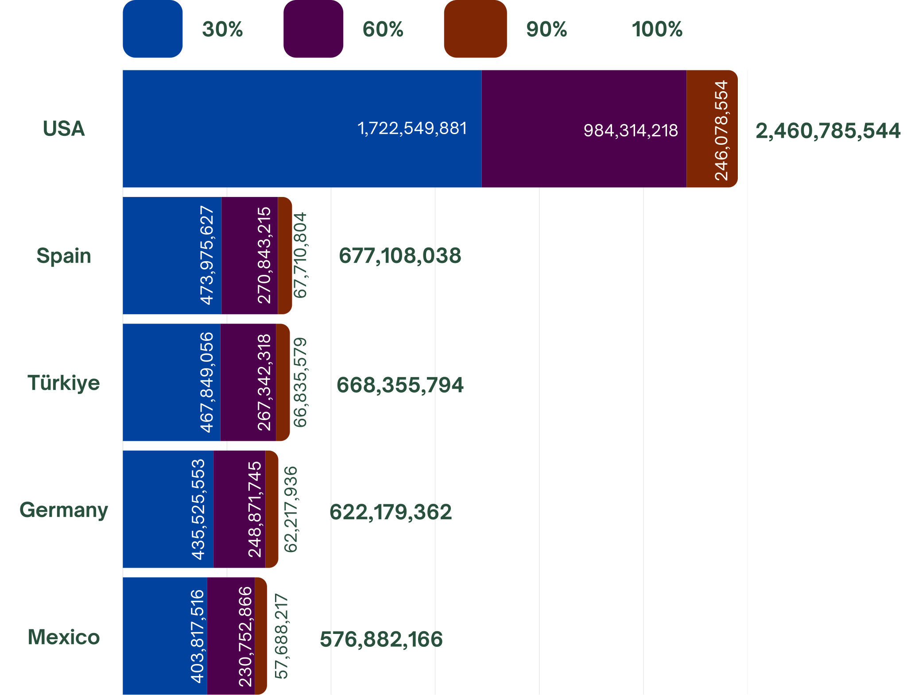

Select foodshock percentage
This webpage allows a user to visualize the trade amounts of cereals at food shock levels incrementing from 30% to 90% at both the country and region level. This draws focus to the individual countries that will be most impacted by food trade shocks. Cereals can be defined as edible grains, and include wheat, rice, oat, and corn (Food and Agriculture Organization, 2022). It is especially important to focus on the security of cereal trade routes for two reasons: these grains are a large percentage of global dietary calories – wheat alone contributing 20%, and coarse cereals, which are drought adaptive with high nutritional value, are beginning to be seen as a solution to decreasing global food security (Acevedo et al., 2018, pp. 81-110; Zou et al., 2023).
In a 2022 study by Grassia, et al. titled “Insights into countries’ exposure and vulnerability to food trade shocks from network-based simulations,” foodshocks were defined as a decrease in food production at any scale (2022, pp. 1). The chart below outlines how foodshocks impact the countries that, in 2022, had the most cereal imports globally.
